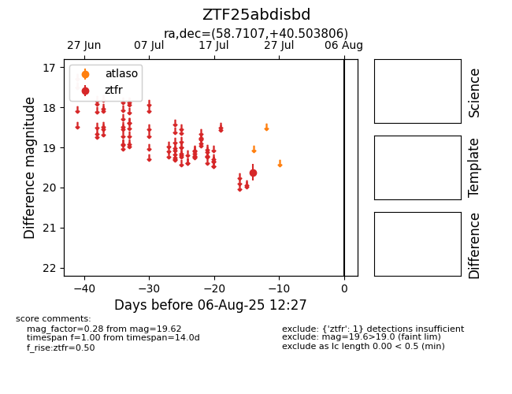

Target ZTF25abdisbd at 2025-08-06 17:27, see:
FINK: fink-portal.org/ZTF25abdisbd
Lasair: lasair-ztf.lsst.ac.uk/objects/ZTF25abdisbd
ALeRCE: alerce.online/object/ZTF25abdisbd
alt names
ZTF25abdisbd (ztf,fink)
coordinates:
equatorial (ra, dec) = (58.7107,+40.50381)
galactic (l, b) = (156.5845,-10.08953)
photometry
last ztfr=19.62
1 ztfr detections
